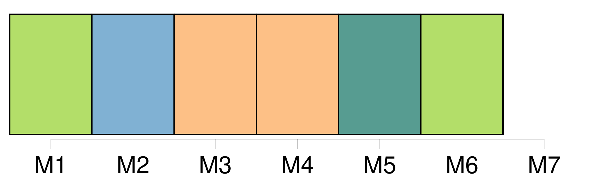
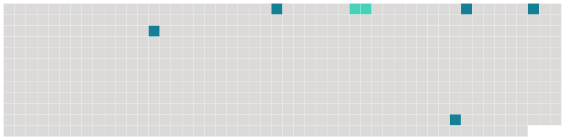

Longueur nb maillons : 6 mentions |
 |
« Madame, s’ il m’ étoit permis de juger des sentimens de votre majesté par les miens, je n’ oserois vous dire [adieu] pour jamais, de crainte que [cette parole] ne mît votre vie au même péril où [elle] met la mienne en vous [l’] écrivant. [1 phrases] C’ est donc pour jamais, madame, que je dis [adieu] à votre majesté, et je vous supplie très humblement de croire qu’ en quelque endroit du monde que la persécution me puisse jeter, j’ y passerai mes jours dans la fidélité et dans l’ attachement qui sont les véritables causes qu’ on me persécute, et n’ aurai de regret, parmi les ennuis qui m’ accablent, que de n’ en pouvoir pas souffrir davantage pour l’ amour de vous. [6 phrases] [Adieu] pour la dernière fois, madame ; je ne puis plus penser à ne vous voir jamais, et si cette mortelle imagination ne me donne relâche pour un moment, je ne vivrais même pas assez pour vous dire que je suis, madame, de votre majesté, la très fidèle, etc. |
 |
Il est possible de télécharger la ressource sur la page Ortolang |
Si vous avez des questions ou vous voyez des erreurs, merci d'envoyer un mail à silvia.federzoni89@gmail.com |